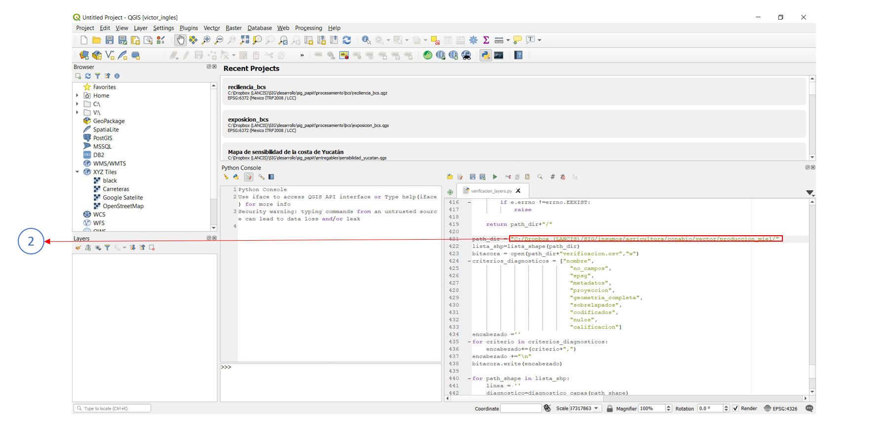

OWA¶
OWA (Ordered Weighted Average) es un análisis de aptitud territorial basado en procedimientos de Sistemas de Información Geográfica (SIG) y evaluación multicriterio (Malczewski, 2006). El análisis OWA genera un amplio rango de escenarios de aptitud territorial cambiando únicamente un parámetro lingüístico (alpha), relacionado con la rigidez en el cumplimiento de criterios preestablecidos.
OWA está definido por la siguiente ecuación:
Donde:
j = Criterio
uk = Peso ordenado del criterio j
k= Orden asignado al peso del criterio j (renglón)
i = Pixel
z_ij = Valor ordenado del criterio j en el pixel i
α = Cuantificador lingüístico
Descargar el código de ejemplo
Requerimientos generales¶
Para asegurar la ejecución correcta del código es importante verificar la instalación y funcionamiento de los siguientes elementos:
- Qgis 3.4 o superior y librerías de Osgeo4W
- Librerías python:
- Numpy
- Pandas
- GDAL
- reduce
Requerimientos generales de los insumos¶
Es importante que todas las capas raster cumplan con las siguientes condiciones:
- Misma proyección cartográfica
- Mismo tamaño de pixel
- Misma extensión de capa
- Mismo valor de NoData
Ejemplo¶
Procedimiento¶
1. Abrir el código¶
Abrir el código owa_raster.py en Qgis 3.4 o superior, Para resolver cualquier duda al respecto, consultar la guia
2. Actualizar el diccionario¶
Ingresar las capas raster de entrada con sus respectivos pesos a la función mediante un diccionario. Es importante seguir la estructura del siguiente ejemplo:
dicc_capas = {'capa_1':{'ruta':"C:/Dropbox (LANCIS)/SIG/desarrollo/sig_papiit/entregables/exposicion/biologica/v_acuatica_yuc/fv_v_acuatica_yuc.tif",'w':0.08},
'capa_2':{'ruta':"C:/Dropbox (LANCIS)/SIG/desarrollo/sig_papiit/entregables/exposicion/biologica/v_costera_yuc/fv_v_costera_distancia_yuc.tif",'w':0.42},
'capa_3':{'ruta':"C:/Dropbox (LANCIS)/SIG/desarrollo/sig_papiit/entregables/exposicion/fisica/ancho_playa_yuc/fv_distancia_playa_yuc.tif",'w':0.065},
'capa_4':{'ruta':"C:/Dropbox (LANCIS)/SIG/desarrollo/sig_papiit/entregables/exposicion/fisica/elev_yuc/fv_elevacion_yuc.tif",'w':0.435},
}
Donde:
- capa_#: Corresponde a la capa en el orden en que se agregó al diccionario,
- ruta : Corresponde a la ruta o path de la capa
- w : Corresponde al peso asociado a esa capa o criterio
Nota
Para adicionar una capa, agregar el consecutivo a la llave de la capa (en este caso capa_5). La línea quedaría de la siguiente forma:
“capa_5”:{“ruta”:path_tiff,”w”:#.###}, }
3. Indicar la capa maestra¶
Para generar la salida en formato tiff se requiere conocer aspectos técnicos como número de columnas y renglones, tamaño de pixel, coordenadas del extent, entre otros.
Estos datos son extraidos por el código mediante la variable path_capa_maestra, en ella, se indica la ruta de cualquier capa raster ingresada en el diccionario del paso #2.
como ejemplo se toma la ruta de la capa_1
path_capa_maestra = "C:/Dropbox (LANCIS)/SIG/desarrollo/sig_papiit/entregables/exposicion/biologica/v_acuatica_yuc/fv_v_acuatica_yuc.tif"
4. Indicar el direcctorio de salida¶
Indicar el directorio donde guardarán los mapas de salida.
por ejemplo:
path_salida = "C:/Dropbox (LANCIS)/SIG/desarrollo/sig_papiit/procesamiento/owa/"
5. Los valores de alpha¶
El código tiene valores predeterminados de alpha
Nota
Para más información respecto a los valores de alpha consulte la bibliografía
owa_alphas = [0.0001,0.1,0.5,1.0,2.0,10.0,1000.0]
| α | Quantifier (Q) |
|---|---|
| 0.0001 | At least one |
| 0.1 | At least a few a a |
| 0.5 | A few |
| 1.0 | Half (identity) |
| 2.0 | Most |
| 10.0 | Almost all |
| 1000 | All |
para cada valor en la lista, el código generará un mapa en el directorio de salida

Bibliografía¶
Malczewski, J. (2006). Ordered weighted averaging with fuzzy quantifiers: GIS-based multicriteria evaluation for land-use suitability analysis. International Journal of Applied Earth Observation and Geoin-formation, 8 ,270-277.